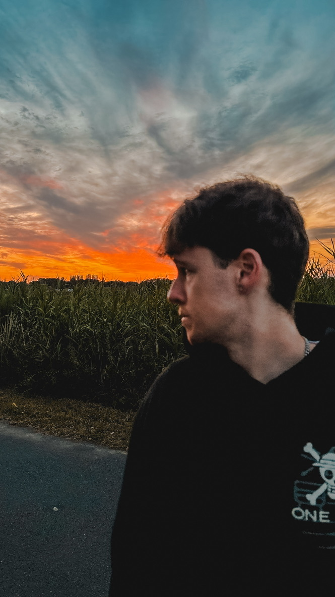

About me

Hi! I’m Sieben Nopens, an 19-year-old student in Graphic and Digital Media based in Lokeren. I’m passionate about turning ideas into clear and engaging visuals — whether that’s through line-based illustration, digital design or motion. I like to keep things simple, but never boring. The visual on the right is a graphic on how much activity I do in a day.